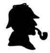

St. George Teoloji Üniversite’nin merhum dekanı Elias Whitney’in erkek kardeşi Isa.
Whitney, ileri derecede afyon bağımlısıydı. Üniversitedeyken De Quincey’nin kitabını okumuş ve kendi de aynı şeyleri yaşamak için tütününe afyon tentürü katarak bu alışkanlığa başlamıştı. Birçoklarında olduğu gibi, o da bırakmanın başlamaktan daha zor olduğunu görmüş; ama ne çare, uzun yıllar ilacın kölesi; arkadaşları ve akrabalarının utanç ve üzüntü kaynağı olmuştu. Sararmış ve solgun yüzü, sarkık dudakları, morarmış gözkapakları ve toplu iğne başı gibi küçülmüş gözbebekleriyle bir sandalyeye yığılmış olan bu soylu adamın enkazı hâlâ gözlerimin önünde.
Bir gece - 1889 yılının Haziran ayında - insanın esnemeye ve saate bakmaya başladığı vakitlerde kapım çalındı. Oturduğum yerde doğruldum. Karım, elindeki örgüyü bırakıp, rahatsız edilmiş olmanın verdiği öfkeyle: “Bir hastan olmalı,” dedi. “Dışarı çıkman gerekecek.”
Kendi kendime söylendim; uzun ve yorucu bir gün geçirmiştim zaten. Dış kapının açıldığını duyduk; aşağıda çabuk çabuk konuşmalar ve koridordaki acele adımlar… Odamızın kapısı açıldı ve içeriye siyahlar giymiş, peçeli bir kadın girdi.
“Gecenin bu vaktinde geldiğim için özür dilerim,” diye söze başladı, derken bütün itidalini yitirdi; ileri fırladı; kollarını karımın boynuna doladı ve başını omzuna koyarak ağlamaya başladı. “Ah, başım öyle bir dertte ki!” diye bağırdı. “Yardıma ihtiyacım var.”
“Hay Allah,” dedi karım, kadının peçesini kaldırarak, “Kate Whitney’mis. Beni ne kadar korkuttun Kate! İçeri girdiğinde kim olduğunu anlamamıştım.”
“Ne yapacağımı bilemediğimden doğruca size geldim.”
Her zaman böyle olurdu zaten. Derdi olan, ışığa koşan pervaneler gibi doğrudan karıma koşardı.
“Buraya gelmen ne iyi oldu. Sakin ol. Otur bakayım şuraya. Al, bir bardak şarap iç de olanları rahat rahat anlat. İstersen James’i yatmaya gönderebilirim?”
“Oo, hayır, hayır. Doktorun tavsiyesine ve yardımına ihtiyacım var. Isa’nın başı dertte..İki gündür eve gelmedi. Onun için çok endişeleniyorum!”
Aile doktoru olduğum için benimle görüşürdü; karımın da eski okul arkadaşıydı ama ilk kez bizimle Isa hakkında konuşuyordu. Onu elimizden geldiğince yatıştırmaya ve rahatlatmaya çalıştık. Kocasının nerede olduğunu biliyor muydu? Onu herhangi bir yerde arayıp bulabilir miydik?
Evet, ona yardım edebilirdik. Son zamanlarda kocası şehrin doğusundaki bir afyon yatağına dadanmış. Kriz zamanları şimdiye kadar bir günden fazla sürmemiş ve ertesi gün bitkin bir halde, bütün vücudu titreyerek eve dönermiş. Ama bu kez tam kırk sekiz saat geçmiş. Herhalde rıhtımın oralardaki çöplüklerde yatmış o zehri içiyordu. Onu yukarı Swandam Sokağı’ndaki Altın Barda bulabileceğimize emindi. Kendisinin elinden ne gelirdi ki? Genç ve mahcup bir kadın olarak öyle bir yere gidip kocasını bulunduğu çukurdan çekip çıkaramazdı ki, insanlar ne derdi sonra?
Mesele buydu ve tek bir çözümü vardı. Ona oraya kadar eşlik edemez miydim? Yoksa ben tek başıma gitsem daha mı iyi olurdu? Nihayetinde ben, Isa Whitney’in aile doktoruydum ve üzerinde en azından bu kadar bir etkim olması gerekirdi. Yalnız başıma gidersem daha iyi olurdu. Eğer verdiği adresteyse, kocasını iki saate kalmaz bir arabayla eve göndereceğime söz verdim. Ve böylece on dakika sonra, rahat koltuğumdan ve sıcak evimden çıkmış, garip bir görev için doğuya doğru gitmekteydim. Karşıma daha ne gariplikler çıkacağını bilemezdim tabii.
Ama maceramın ilk kısmında hiç de zorlanmadım. Yukarı Swandam Sokağı, nehrin kuzeyini Londra Köprüsü’nün doğusuna bağlayan, rıhtımların arkasındaki pis sokaklardan biriydi. Aradığım yer, iki bina arasından merdivenlerle inilen mağara gibi karanlık bir mahzendi. Arabacıya beklemesini söyleyerek, yıllardır üzerinden geçen sarhoş ayakların etkisiyle çürümüş merdivenlerden aşağı indim ve kapının üstüne yerleştirilmiş bir yağ lambasının ışığıyla, kolu bulup açtım.
Yatakları göçmen gemilerinin koğuşları gibi yerleştirilmiş, havası yoğun afyon dumanıyla ağırlaşmış, uzun, basık bir odada buldum kendimi. Her tarafta yere yatıp kıvrılmış insan vücutları hayal-meyal seçiliyordu. Omuzlar bükülmüş, dizler kıvrılmış, kafalar arkaya atılmış, öylece yatıyorlardı. Sağda ve solda birkaç çift parlayan göz, yeni gelen yabancıya bakıyordu. Karanlık gölgelerin arasından, metal pipolarda yanan zehrin, parlayıp sönmesiyle oluşan küçük, kızıl ışık çemberleri görülüyordu ara sıra. Bazıları kendi kendine söyleniyor, bazıları, küçük gruplar halinde, garip, kısık ve monoton bir sesle sohbet ediyordu. Konuşma esnasında bazıları heyecanla sesini yükseltiyor, sonra yine sessizliğe gömülüyor, ama sonuçta herkes yanındakini dinlemeden kendi düşüncelerini geveliyordu.
Odanın ucundaki kömür mangalının yanında, dirsekleri dizlerinde, çenesi iki elinin arasında, üç ayaklı tahta bir iskemlenin üzerine oturmuş ateşe bakan, zayıf, uzun boylu, yaşlı bir adam vardı. İçeri girdiğimde, çiçek bozuğu suratlı bir Malayalı, elinde bir afyon çubuğuyla yanıma geldi ve bir yatak gösterdi.
“Teşekkür ederim, burada kalmayacağım,” dedim. “Arkadaşım Isa Whitney’le konuşmak için geldim.”
Sağ tarafımda bir şey kımıldadı, hafif bir çığlık işittim; gözlerimi karanlığa diktim, darmadağınık saçları ve yuvalarından fırlamış gözleriyle solgun, zayıf ve perişan haldeki Whitney’i gördüm.
“Aman Tanrım! Watson gelmiş,” dedi. Acınacak bir haldeydi. Bütün vücudu titriyordu. “Baksana Watson, saat kaç?”
“On bire geliyor.”
“Günlerden ne?”
“19 Haziran Cuma.”
“Vay canına! Ben Çarşamba sanıyordum. Bugün Çarşamba yahu. Ne diye beni korkutmaya çalışıyorsun?” Yüzü kollarının arasına gömüldü ve sessizce sızlanmaya başladı.
“Bugün günlerden Cuma, be adam. Karın iki gündür seni bekliyor. Kendinden utanmalısın!”
“Utanıyorum zaten. Ama yanlışın var Watson! Ben buraya geleli sadece birkaç saat oldu. Kaç tane olduğunu unuttum, ama en fazla üç dört pipo içmişimdir. Ama seninle eve geleceğim. Zavallı, küçük Kate’imi korkutmak istemem. Bana yardım et! Arabayla mı geldin?”
“Evet, dışarıda bekliyor.”
“Hadi gidelim öyleyse. Ama buraya borç yaptım. Borcum ne kadarmış öğren Watson. Mahvoldum ben. Artık dayanamayacağım.”
Uyuşturucu afyon kokusunu içime çekmemek için nefesimi tuttum. Malayalı’yı bulmak için afyonkeşlerin huzursuz rüyalar gördükleri odaların arkasındaki dar yoldan geçtim. Mangalın başındaki uzun boylu adamın yanından geçerken birinin ceketimi çektiğini hissettim. Kısık bir ses: “Yanımdan geç ve sonra arkana dönüp bana bak.” dedi. Sözleri net bir şekilde duymuştum. Ses ancak dibimde oturan yaşlı adamdan gelmiş olabilirdi. Ama o, yerinden bile kıpırdamamıştı; kırışık yüzlü, zayıf, kamburu çıkmış bir adamdı bu. Dizlerinin arasındaki afyon piposu, sanki az önce elinden düşmüş gibi duruyordu.
İki adım atarak arkama baktım. Şaşkınlıktan bağırmamak için kendimi zor tuttum. İhtiyar adam, sadece benim görebileceğim bir şekilde dönmüş bana bakıyordu. Sırtı diklenmiş, kırışıkları gitmiş, gözleri eski parlaklığına kavuşmuştu. Orada ateşin başında oturan, tütün çiğneyerek bana bakıp şaşkınlığıma gülen, Sherlock Holmes’dan başkası değildi. Başını hafifçe sallayarak yaklaşmamı işaret etti ve yine eski yaşlı haline geri döndü.
“Holmes!” diye fısıldadım, “bu cehennemde ne işin var, Allah aşkına?”
“Mümkün olduğu kadar kısık sesle konuş,” diye cevap verdi, “kulaklarım iyi duyar. Ne yap et, şu sarhoş arkadaşının yanından ayrıl. Seninle biraz konuşmak istiyorum.”
“Dışarıda bir araba bekliyor.”
“O zaman arkadaşını ona bindir, eve gönder. Bırak yalnız gitsin, öylesine zayıf düşmüş ki, artık bir delilik yapacağını sanmam. Ayrıca karına, benimle birlikte olduğuna dair bir not gönderirsen iyi olur. Dışarıda beni bekle, beş dakikaya kalmaz gelirim.”
Sherlock Holmes’un hatırını kırmak hep zor olmuştur benim için; çünkü her ricası, yerine getirilmesi gereken bir emirden farksızdır. Whitney’i arabaya bindirdikten sonra benim işim zaten bitmiş sayılırdı. Artık dostumun garip maceralarından birine katılmaya hazırdım. Birkaç dakikada notu yazmış, Whitney’in borcunu ödemiş, arabaya bindirmeye başarmıştım. Tam o esnada afyon tekkesinden bir adam çıktı; iki yana sallanıyordu. Kamburu çıkmıştı, sendeliyordu; bu Holmes’du. Sokakta yürümeye başladık. Bir süre sırtı bükük, topallaya topallaya yürüdü. Sonra çevresini kolaçan etti, sırtını doğrulttu ve içten bir kahkaha patlattı.
“Watson,” dedi, “herhalde, kokain çekme ve diğer zaaflarıma afyon içmeyi de eklediğimi düşünüyorsundur.”
“Seni burada gördüğüme gerçekten şaşırdım.”
“Ben de seni burada görünce şaşırdım.”
“Bir arkadaşımı arıyordum.”
“Ben de bir düşmanımı.”
“Bir düşman mı?”
“Evet, ezeli düşmanlarımdan birini. Daha doğrusu, doğal avlarımdan birini.
Kısacası Watson, çok farklı bir araştırmanın içindeyim ve hep yaptığım gibi, bir ipucu bulabilmek için bu sarhoşların ağzını aramaya geldim. Eğer beni tanısalardı hayatım büyük tehlikeye girerdi. Şu Malayalı dolandırıcı beni eskiden tanır. Kendisi çete reisiydi ve benden intikam alacağına yemin etmişti. Binanın arkasından Paul Rıhtımına çıkan gizli kapının dili olsaydı da aysız gecelerde yaşanan garip hikâyeleri bir anlatsaydı.”
“Ne? Cinayet mi demek istiyorsun?”
“Evet, cinayet. O batakhaneye girip de öldürülen her zavallı için bin sterlin alsaydık köşeyi dönmüştük. Burası nehir kıyısındaki en acımasız cinayet tuzağıdır. Korkarım Neville St. Clair de bir daha hiç çıkmamak üzere buraya düştü. Ama bekle, tuzağımızı buralarda bir yere kurmuştuk.”
Derken işaret parmaklarını dudaklarının arasına sokup tiz bir ıslık çaldı. Bu işarete uzaktan bir cevap geldi ve az sonra sokaktaki parke taşları üzerinde dönen tekerlek gıcırtıları ve at nalı sesleri duyuldu.Atlı araba, karanlığı yaran sarı farlarıyla ortaya çıktığında...
“Ee, Watson,” dedi Holmes,, “benimle geliyorsun, değil mi?”
“Eğer yardımım dokunacaksa.”
“Ah, güvenilir bir dost her zaman işe yarar; hele de bir hikâye yazarıysa o.
“Cedars’daki odamda fazladan bir yatak var.”
“Cedars mı?”
“Evet, orası Bay St. Clair’in evi. Soruşturmayı yürüttüğüm sürece orada kalacağım.”
“Bu yer tam olarak nerede?”
“Kent kasabasının Lee köyünde. Buradan yedi mil uzakta.”
“Hiç duymamıştım.”
“Duymadın. Ama az sonra göreceksin. Arabaya bin. Tamam John, artık sana ihtiyacımız kalmadı. Al sana yarım altın. Yarın saat on birde beni burada bekle. Görüşürüz!”
Holmes atları hafifçe kırbaçladı ve birlikte karanlık ve ıssız sokaklara daldık. Gittikçe genişleyen yol, altındaki pis nehrin uyuşuk uyuşuk aktığı geniş bir köprüye açılıyordu. İlerideki monoton kiremit yığınının sessizliği, bir polisin ağır ve düzenli ayak sesleri veya çevreden geçen birkaç sarhoşun şarkılarıyla arada sırada bozuluyordu. Gökte bir bulut kümesi yavaşça sürükleniyor, sağda ve solda bulutların arasından bir iki yıldız göz kırpıyordu. Holmes, başını eğip derin düşüncelere dalmış bir halde arabayı sessizce sürerken ben de yanında oturmuş, yeteneklerini zorladığı belli olan bu yeni araştırmanın ayrıntılarını merak ediyordum; ama düşüncelerinin akışını bozmamak için soru sormaya çekiniyordum. Birkaç mil daha gittikten sonra şehrin arka mahallelerinin sınırına gelmiştik ki, Holmes şöyle bir silkelenip omuzlarını düzeltti ve piposunu yaktı.
“Çok az kimse senin gibi susmasını bilir Watson,” dedi, “Bu yüzden sen, eşi bulunmaz bir dostsun. İnan bana, bu meseleyi biriyle konuşmayı o kadar istiyordum ki… Zira şu anki düşüncelerim hiç de iç açıcı değil. Bu gece, kapıda karşılaştığımızda zavallı kadıncağıza ne diyeceğimi düşünüyorum.”
“Unutma ki ben henüz bu meseleyle ilgili hiçbir şey bilmiyorum.”
“O zaman sana Lee’ye gidene kadar en önemli noktaları anlatayım. Çok basit görünmesine rağmen henüz bir ilerleme kaydedemedim. Bir sürü ipucu var ama gerçeği göremiyorum. Şimdi sana vakayı kısaca apaçık anlatayım. Belki sen benim göremediğim bir ışığı görürsün.”
“Devam et.”
“Birkaç yıl önce – daha doğrusu, 1884 Mayıs’ında - Neville St. Clair adında zengin bir beyefendi gelmiş Lee’ye. Büyük bir villa alıp güzelce döşemiş, zevk ve sefa içinde yaşamaya başlamış. Zamanla çevrede dostlar edinmiş ve 1887’de yerel bir bira fabrikatörünün kızıyla evlenmiş ve iki çocukları olmuş. Doğru dürüst bir mesleği yokmuş ama birkaç şirkete ortak olduğundan sabahları düzenli olarak şehre iner, akşamları da Cannon Caddesi’nden kalkan beş onbeş treniyle eve dönermiş.
“Bay St. Clair şimdi otuz yedi yaşında. Kötü alışkanlığı yok, iyi bir koca ve görevlerinin bilincinde bir aile babası. Onu tanıyan herkesin sevdiği bir insan. Öğrendiğimize göre, kimseye borcu olmadığı gibi Capital & Counties Bankası’nda 220 sterlin hesabı var. Senin anlayacağın, para sorunu yok.
“Geçen pazartesi Bay Neville St. Clair, şehre her zamankinden daha erken gitmiş ve giderken, iki önemli işi olduğunu söylemiş.Eve döndüğünde küçük oğluna tahtadan oyuncak alıp getireceğine söz vermiş. Yine aynı gün o çıktıktan hemen sonra karısı bir telgraf almış. Aberdeen Nakliyat Şirketi’nde bir paketi olduğu, gelip alması gerektiğini bildiriliyormuş. Londra’yı iyi tanıdığına göre bilirsin, bu şirketin bürosu Fresno Sokağı’ndadır. O sokak da bu gece karşılaştığımız Yukarı Swandam Sokağı’na açılır.
“Uzatmayalım, o gün Bayan St. Clair öğle yemeğini yedikten sonra şehre inmiş. Biraz alışveriş yapmış, şirketin bürosuna giderek paketini almış ve saat 16.35 sularında Swandam Sokağı’ndan geçerek istasyona doğru yola koyulmuş. Buraya kadar tamam mı?”
“Tamam.”
“Hatırlıyorsan, o Pazartesi günü hava aşırı sıcaktı. Bayan St. Clair yorulmuş, içinde bulunduğu muhitten de rahatsız olduğundan yavaş yavaş yürüyerek bir fayton bakınmaya başlamış. Swandam Sokağı’ndan aşağı yürürken birden bir çığlık duymuş; kocasının, bir binanın ikinci katından eliyle ona işaret ettiğini görünce şaşkınlıktan donakalmış. Açık pencereden, kocasının son derece sıkıntılı yüzünü belirgin bir şekilde görebiliyormuş. Adam, karısına habire el sallarken, sanki arkadan birileri onu çekmiş gibi gözden kaybolmuş. Keskin gözleri olan kadının dikkatini bir şey çekmiş; kocasının üzerinde, sabah evden çıkarken giydiği koyu renk ceketi bulunmakla birlikte, gömleğinin yakası açıkmış ve kravatı da yokmuş.
“Kadın ters giden birşeyler olduğunu düşünerek hemen merdivene koşmuş. Bu ev, gece sana rastladığım şu afyon tekkesiydi . Ön odayı geçip ilk kata çıkan merdivenlere yönelmiş. Ama sana bahsettiğim alçak Malayalı, merdivenlerin dibinde onu durdurmuş. Orada fedai olarak çalışan bir Danimarkalıyla birlikte kadını sokağa atmışlar.
“Aklını başından alan şüphe ve korkularla kadıncağız sokaktan aşağı koşmuş ve şansına, yolda birkaç polis ve bir müfettişe rastlamış. Müfettişle iki adamı onunla birlikte gelmiş. Ev sahibi Malayalı’nın bütün itirazlarına rağmen zorla eve girip odaları aramışlar. Bay St. Clair’in en son göründüğü odaya çıkmışlar. Ama adam orada değilmiş. O katta, orayı kendine mesken edinmiş topal bir dilenciden başkası yokmuş. O ve Malayalı, o gün öğleden sonra bu odaya kimsenin ayak basmadığına yemin etmişler. Öylesine inkâr etmişler ki, müfettiş tereddüt etmeye başlamış; yoksa Bayan St. Clair hayal mi görmüştü? Tam o sırada kadın bir çığlık atarak masanın üzerindeki küçük bir kutuya atılmış ve kapağını kopararak açmış, içinden kocasının oğluna getireceğine söz verdiği tahtadan yapılmış oyuncak ev çıkmış.
“Bu olayın üzerine bir de dilencinin kararsızlığı eklenince, müfettiş, meselenin ciddi olduğunu fark etmiş. Her yeri baştan başa aramışlar ve bütün delillerin korkunç bir cinayete işaret ettiğine karar vermişler. Penceresi sokağa bakan odaya bitişik küçük bir yatak odası vardı. Bu odanın pencereleri Thames nehrine açılıyordu. Rıhtımla yatak odasının penceresi arasında, gelgit yükseldikçe suyla dolan dar bir alan varmış; sular çekildiğinde bu alan meydana çıkıveriyormuş.
”Yatak odası penceresi oldukça genişmiş ve alttan açılıyormuş. İnceleme sonucu, pervazda ve odanın ahşap zemininde kan izine rastlanmış. Bay Neville St. Clair’in bütün giysileri oturma odasındaki perdenin arkasına tıkılmış bir halde bulunmuş. Ceketi hariç, çizmeleri, çorapları, şapkası ve saati... hepsi oradaymış. Bütün bu eşyalar incelenmiş ama zor kullanıldığına dair bir ipucu bulunamamış.
“Bay Neville St. Clair’den eser yokmuş. Başka çıkış yolu olmadığı için pencereden çıkıp gitmiş olmalıydı. Pencere pervazındaki lekelere bakılırsa, belki de suların yükseldiği bir zamanda atlayıp yüzerek kaçmış olabilir diye düşünmüşler.
“Şimdi gelelim şu serserilere. Onlar da meseleye dahil olmuşlar tabii. Malayalı’nın ne kadar kötü bir sabıkası olsa da, kendisini cinayetten ötürü tutuklamak imkânsız, çünkü Bayan St. Clair’in ifadesine göre, kocasını pencerede gördükten birkaç saniye sonra merdivenin dibinde Malayalı’yla karşılaşmış. Bu durumda onu, olsa olsa cinayete yataklık etmekten suçlayabiliriz. Adamın savunması son derece cahilceymiş; kiracısı Hugh Boone’un neyle meşgul olduğunu bilmediğim ve beyefendinin giysilerinin bu odaya nasıl geldiğini açıklayamayacağını söylemiş. Malayalı hakkında söyleyeceklerim bunlar.
“Tekinsiz topala gelince, afyon tekkesinin bulunduğu binanın ikinci katında kalıyor. Büyük ihtimalle Neville St. Clair’i hayatta gören en son kişi o. Adı Hugh Boone. Şehirde çok dolaşan herkes onun o çirkin yüzünü tanır. Aslında profesyonel bir dilencidir, ama polis kanunlarından yırtmak için kibrit satıcısıymış gibi görünür. Buradan pek uzakta olmayan Threadneedle Sokağı’nın sol tarafında, sen de fark etmişsindir, duvarda küçük bir boşluk vardır. İşte bu yaratığın köşesi orasıdır. Her gün orada, kucağında kibritleriyle bağdaş kurup oturur. O kadar zavallı bir görünümü vardır ki gelen geçen önündeki yağlı kaskete sadakalarını bırakır. Ne iş yaptığını merak ettiğim için onu birkaç kez izledim. Kısa sürede elde ettiği hasılatı duysan şaşarsın. O kadar değişik bir görüntüsü var ki, hiç kimse onu fark etmeden geçemez. Portakal rengi saçlar, solgun bir yüz, üst dudağına kadar inen korkunç bir yara izi, bir buldok çenesi ve saçlarının rengiyle tam bir kontrast oluşturan kapkara gözleri ve delici bakışları. Bütün bu özelliklere bakarak yüzlerce dilenci arasından onu tanımak mümkün. Aradığımız adamı en son gören kişi işte bu dilenci.”
“Ama adam topalmış!” dedim. “Böyle bir sakat sapasağlam bir adama ne yapabilir ki?”
“Sadece bir bacağı topallıyor; bunun dışında güçlü ve sağlıklı bir adam. Doktor olarak sen de bilirsin ki Watson, bir organdaki zayıflık, çoğu zaman diğerlerinin daha güçlü olmasına yol açar.”
“Lütfen hikâyeye devam et.”
“Bayan St. Clair, pencere pervazındaki kan lekelerini görür görmez düşüp bayılmış. Bir polis memuru, araştırmaları sırasında artık bir işe yaramayacağını düşünerek onu evine götürmüş. Müfettiş Barton, evi dikkatlice incelemiş ama meseleye ışık tutacak birşey bulamamış. O sırada Boone’u hemen tutuklamamakla hata yaptılar; çünkü bu beş-on dakikalık zaman diliminde adam Malayalı arkadaşına haber vermiş olabilir. Neyse ki polis hatanın farkına çabuk varıp adamların üstlerini başlarını aramışlar ama bir şey bulamamışlar.
Gerçi topalın gömleğinin sağ kolunda bir kan izi bulmuşlar ama adam, tırnağını keserken parmağını kanattığını söylemiş. Ayrıca pencere pervazı ve döşemedeki kan lekelerinin de kaynağı buymuş. Bay Neville St. Clair’i daha önce hiç görmediğine ve odasındaki giysilerin en az polisi şaşırttığı kadar kendisini de şaşırttığına yemin etmiş. Bayan St. Clair’in, kocasını pencerede gördüğünü ifade ettiğini hatırlatdıklarında ise, kadının ya delirmiş, ya da hayal görüyor olduğunu söylemiş. Karakola götürürlerken bağırıp çağırmış. Bu arada müfettiş, dalgalar çekilince taze ipuçlarına rastlamak umuduyla evden ayrılmamış.
“Ama dalgalar çekilince, çamur yığınının arasında buldukları ne yazık ki Neville St. Clair’in kendisi değil, ceketi olmuş. Peki ceplerinde ne bulmuşlar dersin?”
“Bilmem?.”
“Tahmin edemezdin zaten. Ceketin cepleri bozuk paralarla doluymuş: 421 peni ve 270 yarım peni. Ceketin dalgalarla sürüklenmemesinin sebebi de bu olmalı. Rıhtımla ev arasında bir girdap oluşmakta. Anlaşılan ceset sürüklenip giderken ceket, orada bir zemine saplanıp kaldı.”
“Ama bildiğim kadarıyla, adamın diğer bütün çamaşırlarını odada bulmuşlar. Yani cesedin üzerinde sadece bir ceket mi vardı?”
“Hayır, bayım. Aslında herşey birbirine uyuyor. Diyelim ki bu Boone denen adam Neville St. Clair’i pencereden dışarıya itti. Onu gören biri olmadığına göre hemen sonra ne yapması gerekecekti? Tabii ki kendini ele verecek giysilerden kurtulmak! Tam ceketi tutup pencereden atacakken, onun batmayıp yüzeceği aklına gelmiş olabilir. Ama fazla zamanı kalmamıştı. Çünkü aşağıda kadının yarattığı gürültüyü duymuştu. Belki de o arada Malayalı, polisin gelmekte olduğunu haber vermişti. Kaybedecek bir saniye bile yoktu. Dilencilikten elde ettiği hasılatı sakladığı yere koşarak ele geçirebildiği tüm bozuk paraları ceketin ceplerine doldurdu ; böylece ceket suya batacaktı. Sonra ceketi pencereden dışarı attı. Aynı şeyi çamaşırlara da uygulamayı düşünmütü, ama aşağıdan gelen ayak seslerini işitince, polis gelmeden pencereyi kapayacak zamanı ancak buldu.”
“Olabilir.”
“Bu bir varsayım sadece, ama daha iyisi aklıma gelmiyor. Söylediğim gibi, Boone’u tutuklayıp karakola götürmüşler ama aleyhinde birşeyler bulamazlar. Yıllardır profesyonel dilencilik yaptığı biliniyor, onun dışında sakin bir hayat sürmüş ve hiçbir suça karışmamış. Tam bu noktada, cevaplanması gereken bazı sorular çıkıyor ortaya. Neville St. Clair’in o afyon tekkesinde ne işi vardı? Orada başına ne geldi? Şimdi nerede bulunuyor? Hugh Boone’un bu işte parmağı var mı? Bu sorulara hâlâ kesin cevaplar bulmuş değiliz. Şimdiye kadar, ilk bakışta basit görünüp bu kadar zor olan bir vaka görmediğimi itiraf etmeliyim.”
Sherlock Holmes bu olaylar zincirini anlatırken, arabamız, şehrin dış mahallelerinden çıkıp kırsal bölgelere girmişti bile. Hikâye bittiğinde, bazı pencerelerinden hâlâ ışık sızan iki köyün arasından geçiyorduk.
“Lee’nin dış mahallelerindeyiz,” dedi yol arkadaşım. “Bu kısa yolculuğumuz boyunca, Middlesex’ten başlayıp, Surrey’den geçerek sonunda Kent’e ulaştık. Ağaçların arasındaki şu ışıkları görüyor musun? Orası Cedars ve lambanın yanında oturan kadın, atların ayak seslerini duymuş olmalı.”
“İncelemelerini neden Baker Caddesi’nde yürütmüyorsun?”
“Çünkü ancak burada açıklamasını yapabileceğim birkaç nokta var. Bayan St. Clair nazik davranıp bana iki oda ayırttı. Eminim senin gibi bir dost ve meslektaşım olduğunu görünce de sevinecektir. Şimdi karşısına geçip de kocasıyla ilgili yeni haberlerin olmadığını yüzüne söylemek öyle zor olacak ki, Watson. İşte geldik.”
Büyük bir villanın önünde durduk. Bir kahya gelerek arabayı götürdü. Ben de Holmes’un arkasında, çakıl yoldan eve doğru yürümeye başladım. Yaklaştığımızda kapı açıldı ve önümüzde kısa boylu sarışın bir kadın belirdi. Boynuna ve bileklerine pembe şifonlar dikilmiş muslin bir elbise giymişti. Bir eli kapıda, diğeri hafifçe havaya kaldırılmıştı; vücudu biraz öne eğilmiş, meraklı gözlerle bize bakıyordu.
“Ee?” diye atıldı, “neler oldu?” Sonra, iki kişi olduğumuzu görünce önce sevinç çığlığı attı ama dostumun kafasını sallayıp omuzlarını silktiğini görünce umutsuzca iç çekti.
“Haberler iyi değil mi?”
“Hayır.”
“Kötü mü peki?”
“Kötü de sayılmaz.”
“Buna da şükür. Lütfen içeri buyrun. Bu uzun günden sonra yorgun düşmüş olmalısınız.”
“Tanıştırayım; dostum Dr. Watson. Şimdiye kadar üstlendiğim vakalarda bana çok kez büyük yardımı dokunmuştur. Şans eseri onunla karşılaştık ve onu da bu araştırmaya dahil ettim.”
“Sizinle tanıştığıma sevindim,” dedi elimi samimiyetle sıkarak. “Bir eksiğimiz olursa kusura bakmayın. Herşey o kadar ani oldu ki.”
“Sevgili hanımefendi,” dedim, “eski bir asker olarak bu tip sorunları önemsemem. Eğer size ya da buradaki dostuma bir yardımım dokunabilirse ne mutlu bana.”
Bizi yemek odasına aldı. Masa donatılmıştı. “Şimdi, Bay Sherlock Holmes,” diye söze başladı, “size birkaç soru sormak istiyorum. Ama lütfen bana dürüstçe cevap verin.”
“Tabii, hanımefendi.”
“Duygularıma aldırış etmeyin. Ne histeri krizine gireceğim ne de düşüp bayılacağım. Gerçek fikrinizi duymak istiyorum.”
“Hangi konuda?”
“Apaçık cevap verin bana! Neville’in hayatta olduğuna inanıyor musunuz?”
Sherlock Holmes’un bu soruya canı sıkılmış gibiydi.
“Lütfen, dürüstçe cevap verin,” diye tekrar etti kadın. Gözlerini dostumdan ayırmıyordu. Holmes koltuğunda geriye yaslandı.
“Doğrusunu söylemek gerekirse, hanımefendi, inanmıyorum.”
“Öldüğünü mü düşünüyorsunuz?”
“Evet.”
“Öldürüldü mü peki?”
“Bunu demek istemedim. Ama belki.”
“Öyleyse hangi gün öldü?”
“Pazartesi.”
“Peki, o zaman Bay Holmes, sizce nasıl oldu da bugün ondan bir mektup geldi?”
Sherlock Holmes, elektrik çarpmış gibi sandalyesinden fırladı. “Ne?” diye haykırdı.
“Evet, bugün.” Kadın, elinde tuttuğu pusulayı sallayarak gülümsedi.
“Bakabilir miyim?”
“Elbette.”
Mektubu heyecanla kadının elinden kaptı. Kâğıt parçasını masanın üzerine yaydı, lambayı yakıp dikkatlice incelemeye koyuldu. Ben de oturduğum yerden kalkmış, dostumun omzunun üzerinden gelen mektuba bakıyordum. Kalın bir zarfın içindeydi. Üzerindeki pula bakılırsa Gravesend’den bugünkü tarihle postaya verilmişti; daha doğrusu dünkü tarihle, çünkü o anda vakit gece yarısını geçmişti.
“Kaba bir yazı,” diye mırıldandı Holmes. “Herhalde bu, kocanızın el yazısı değil, hanımefendi.”
“Yazı onun değil ama mektup onun elinden çıkmış.”
“Öyleyse bir başkası, zarfın üzerini yazmadan önce ondan, sizin adresinizi öğrenmiş.”
“Bunu da nereden çıkarıyorsunuz?”
“Gördüğünüz gibi, zarfın üzerindeki isim, koyu, siyah bir mürekkeple yazılmış ve de havada kurutulmuş. Geri kalan kelimeler açık renkli mürekkeple yazılmış; bu da kurutma kağıdı kullanıldığını gösterir. Eğer hepsi yazıldıktan sonra kurutulmuş olsaydı, yukarıdaki gibi koyu siyah bir renk olmazdı. Adam, ismi yazmış ve adresi yazmadan önce bir süre beklemiş. Bu da mektubu postaya atan adamın adresi bilmediğini gösterir. Ufak bir ayrıntı, ama ufak ayrıntılar her zaman en önemlileridir. Gelelim mektuba! Zarfın içinde, mektubun yanı sıra başka bir şey de olmalıydı.”
“Evet, bir yüzük vardı. Mühürlü bir yüzük.”
“Peki, mektuptaki yazının kocanıza ait olduğuna emin misiniz?”
“El yazılarından biri.”
“Biri mi?”
“Acele yazarken kullandığı el yazısı. Her zamanki yazısına pek benzemez ama bu yazısını da iyi tanırım.”
“ ‘Sevgilim, sakın korkma. Herşey yoluna girecek. Ortada, düzeltmesi biraz zaman alacak büyük bir hata var. Sabret... Neville.’
“Kurşun kalemle, bir kitabın kapağı üzerine yazılmış, büyük harflerle. Kâğıtta soğuk damga yok. Gravesend’den bugün gönderilmiş, veren adamın başparmağı oldukça kirli. Şuraya bak, Watson. Zamklanmış. Yanılmıyorsam adam tütün çiğniyor. Bunun kocanızın yazısı olduğuna kesinlikle emin misiniz, hanımefendi?”
“Evet. Bu satırları Neville yazmış.”
“Ve bugün Gravesend’den postalanmış. Tehlikenin bittiğini sanmayın ama esrar bulutları dağılıyor Bayan St. Clair.”
“Ama kocam en azından hayatta, Bay Holmes, değil mi?”
“Tabii eğer ortada bizi şaşırtmak isteyen bir sahtekârlık yoksa. Yüzük bir şey ifade etmez. Parmağından zorla çekip almış olabilirler.”
“Yo, yoo… Bu yazı kesinlikle onun yazısı.”
“Pekâlâ, ama bu mektup pazartesi yazılıp bugün postalanmış olabilir.”
“Bakın, bu mümkün.”
“Eğer öyleyse, aradaki zamanda çok şey geçmiş olabilir.”
“Ah, lütfen beni umutsuzluğa sürüklemeyin Bay Holmes. Biliyorum, o hayatta. Nasıl anlatsam? Aramızda öyle bir yakınlık vardır ki, başına bir felaket gelmiş olsa hemen hissederim bunu. Mesela kendisini en son gördüğüm gün, yatak odasında elini kesmiş. Ben aynı anda yemek odasından yukarı fırladım; başına bir şey gelmiş olduğunu hissetmiştim. Böyle önemsiz bir şeyi bile hissediyorsam, öldüğünü hissetmez miydim sanıyorsunuz?”
“Bir kadının sezgilerinin, analitik bir akılcının çıkardığı sonuçlardan daha gerçekçi olduğuna çok şahit oldum. Ve bu mektupla hislerinizin kuvvetlenmesi doğaldır. Peki, ama kocanız hayattaysa ve mektup yazabilecek durumdaysa neden size geri dönmüyor?”
“Bilemiyorum. Bunu ben de anlamıyorum.”
“Pazartesi evden çıkarken size bir şey söyledi mi?”
“Hayır.”
“Onu Swandam Sokağı’nda görünce şaşırdınız mı?”
“Hem de nasıl!”
“Pencere açık mıydı?”
“Evet.”
“O zaman istese size seslenebilirdi?”
“Evet.”
“Ama anladığım kadarıyla sadece belli belirsiz bir çığlık attı.”
“Evet.”
“Bir imdat çağrısı mı sandınız?”
“Evet. El salladı.”
“Ama bu bir hayret çığlığı da olabilir. Beklenmedik bir anda sizi görmesi, öyle el sallamasına neden olmuş olabilir.”
“Bu mümkün.”
“Ve size öyle geldi ki, kendisini zorla odanın içine çektiler?”
“Çünkü aniden kayboluverdi.”
“Arkaya sıçramış da olabilir. Odada başkalarını da gördünüz mü?”
“Hayır, ama o korkunç adam orada olduğunu itiraf etti ve de Malayalı merdivenlerin dibindeydi.”
“Çok doğru. Görebildiğiniz kadarıyla, kocanızın üstünde her zamanki giysileri mi vardı?”
“Evet ama gömleğinin yakasıyla kravatı yoktu. Çıplak boynunu net bir şekilde gördüm.”
“Size, daha önceden Swandam Sokağı’ndan bahsetmiş miydi?”
“Hayır.”
“Afyon kullanma belirtisi gösteriyor muydu?”
“Asla!”
“Teşekkür ederim Bayan St. Clair. Bunlar, kesinlikle emin olmak istediğim temel noktalardı. Şimdi akşam yemeğimizi yiyip odamıza çekileceğiz. Çünkü yarın zor bir gün olacak.”
Çift yataklı, rahat ve geniş bir oda hazırlanmıştı bize. Macera dolu bu gece beni yorduğundan hemen yatağa girdim. Oysa Sherlock Holmes, aklına takılan bir problem olduğunda, günlerce, hatta haftalarca hiç dinlenmeden dayanabilirdi. Sonunda problemi çözene veya verilerin yetersiz olduğuna kanaat getirene kadar verileri kafasında evirir çevirir, yeniden düzenler ve her açıdan tekrar tekrar ele alırdı. Bütün gece oturacağını anlamıştım. Paltosunu ve ceketini çıkardı, mavi renkli bol ropdöşambrını giydi; odada dolaşarak yataktaki yastıkları ve kanepeyle koltuğun minderlerini topladı. Bunlarla kendine bir çeşit şark köşesi hazırladı ve bağdaş kurarak oturdu. Lambanın loş ışığında, ağzındaki piposundan havaya mavi dumanlar savurarak gözlerini tavana dikmiş, sessiz ve hareketsiz oturduğunu görebiliyordum. Sabah bir ses duyup da ani bir sıçrayışla gözlerimi açtığımda, güneş pencereden içeri girmişti bile. Dostum hâlâ aynı şekilde oturuyordu. Ağzındaki piposundan hâlâ duman yükseliyordu. Kesif bir duman odayı doldurmuştu; gece gördüğüm tütün paketi bitmişti.
“Uyandın mı Watson?” diye sordu.
“Evet.”
“Şöyle ufak bir sabah turuna ne dersin?”
“Olur.”
“O zaman giyin. Henüz kimse kalkmadı, ama kahyanın nerede uyuduğunu biliyorum, ona gidip arabamızı hazırlatalım.”
Bunları söylerken bıyık altından sırıtıyordu. Gözleri parlıyordu, bir gece önceki ağırbaşlı düşünürden eser yoktu.
Giyinirken saatime baktım. Kimsenin kalkmamış olması normaldi. Saat dördü yirmi beş geçiyordu. Holmes, arabanın hazır olduğunu haber vermeye geldiğinde yeni giyinmiştim.
“Küçük bir teorimi test etmek istiyorum,” dedi, çizmelerini ayağına geçirirken. “Bana şöyle bir bak, Watson! Şu anda karşında Avrupa’nın en büyük enayi adamını görüyorsun.Beni Charing Cross’tan atsalar yeridir. Ama şimdi meselenin anahtarını buldum sanırım.”
“Neredeymiş bu anahtar?” diye gülerek sordum.
“Banyo odasında,” dedi. Yüzümdeki şaşkınlığın farkına varınca: “Şaka yapmıyorum,” diye devam etti. “Oradan geliyorum. Anahtarı yanıma aldım, çantama yerleştirdim. Hadi dostum, bakalım anahtar kilide uyacak mı?”
Olabildiğince sessizce aşağı indik ve parlak sabah güneşine çıktık. Yoldaki arabamızın başında yarı giyinik halde kahya duruyordu. İkimiz de arabanın içine atladık ve Londra Yolu’nu tuttuk. Şehire sebze taşıyan birkaç yük arabasının dışında, yolun her iki yanındaki villalar sessiz ve cansız duruyordu.
“Bazı açılardan ilginç bir vaka oldu,” dedi Holmes, atları kırbaçlayarak. “İtiraf etmeliyim ki bir köstebek kadar körmüşüm. Ama zararın neresinden dönülse kârdır.”
Surrey sokaklarından geçerken, erken kalkanlar, uykulu suratlarla pencerelerinden yeni yeni bakmaya başlamıştı. Waterloo Köprü Yolu’ndan nehri geçerek Wellington Sokağı’na, oradan da Bow Sokağı’ndaki karakola gittik. Sherlock Holmes, polisler arasında iyi tanınan biriydi; kapıdaki iki polis bizi selamladı. Biri atları tutarken, diğeri bize içeri kadar refakat etti.
“Bugün kim görevli?” diye sordu Holmes.
“Müfettiş Bradstreet, efendim.”
“Aa, Bradstreet, nasılsın?” dedi. Başında tepeli şapkası ve düğmeli ceketiyle uzun boylu, iri yarı bir memur koridorun taş döşemelerini adımlarıyla inleterek bize doğru yürüdü.
“Sizinle özel olarak konuşmak istiyorum, Bradstreet.”
“Memnuniyetle, Bay Holmes. Odama buyurun.” Masanın üstündeki büyük rafları ve duvara asılı telefonuyla ufak bir büroya girdik. Müfettiş masasına oturdu.
“Sizin için ne yapabilirim Bay Holmes?”
“Boone için geldim. Biliyorsunuz Bay Neville St. Clair’in kayboluşuyla ilgili olarak suçlanan şu dilenci.”
“Evet. Buraya getirildi ve ileride yapılacak soruşturmalar için tutuklandı.”
“Duymuştum. Hâlâ burada mı?”
“Hücrede.”
“Hiç sorun çıkarıyor mu?”
“Ah, hayır. Ama pis bir herif.”
“Pis mi?”
“Evet, ne kadar ellerini yıkaması için zorlasak da aldırış etmiyor. Neyse, mahkemeye çıkacağı gün zorla banyoya sokarız, olur biter. Halini görseniz bana hak verirdiniz.”
“Onu görmeyi çok istiyorum.”
“Öyle mi? Hallederiz. Benimle gelin. Bavulunuzu burada bırakabilirsiniz.”
“Hayır, yanıma alsam daha iyi.”
“Siz bilirsiniz. Böyle gelin lütfen.” Bizi bir koridordan geçirdi, sürgülü bir kapıyı açtı, döner merdivenden indik. Duvarları kireç sıvalı uzun bir koridora vardık; her iki yanında bir sürü oda vardı.
“Sağdan üçüncü kapı,” dedi müfettiş. “İşte burası!” Sessizce, kapının üstündeki bir pencerenin sürgüsünü çekerek içeri baktı.
“Uyuyor,” dedi. “Bakın, rahatlıkla görebilirsiniz.”
İkimiz de parmaklıklardan içeri baktık. Yüzü bize dönüktü, yavaş ve güç bela nefes alarak uyuyordu. Orta boylu bir adamdı. Üstündeki eski püskü paltosunun altına renkli bir gömlek giymişti. Müfettişin dediği gibi, son derece kirliydi, ama yüzündeki kir o korkunç çirkinliğini örtmeye yetmiyordu. Gözünün altından çenesine kadar inen yara izinin yarattığı büzülmeyle üst dudağı bükülmüş, öndeki iki üç dişini açıkta bırakmıştı. Alnının üstüne dökülen parlak kıpkızıl saçları gözlerini kapatıyordu adeta.
“Şu güzelliğine ne buyrulur?” dedi müfettiş.
“Gerçekten de bir banyoya ihtiyacı var,” dedi Holmes. “Bunu tahmin etmiştim, onun için yanımda gerekli eşyaları getirdim.” Bavulu açıp içinden büyük bir banyo süngeri çıkardığında şaşkınlıktan küçük dilimi yuttum.
“Hah hah ha! Çok şakacısınız!” dedi müfettiş, keyifle gülerek.
“Şimdi, zahmet olmazsa şu kapıyı usulca açıverin; az sonra yüzü gözü belli olacak.”
“Ee, neden olmasın?” dedi müfettiş. “Bow Sokağı’nın hücreleri için hiç de iyi bir izlenim bırakmıyor, değil mi?” Anahtarı kilide sokarak kapıyı açtı; biz sessizce hücreye girdik. Uyuyan adam hafifçe yana döndü ve horlamaya devam etti. Holmes süngeri kovada iyice ıslattıktan sonra mahkûmun yüzünü iki kez bastıra bastıra sildi.
“Sizi tanıştırayım,” diye bağırdı, “Kent ilçesinden Bay Neville St. Clair.”
Hayatımda böyle birşey görmemiştim. Ağacın kabuğu nasıl sıyrılırsa, adamın da gerçek yüzü, süngerin altından meydana çıkıverdi. Kahverengi kir tabakası siliniverdi! O korkunç yara izi ve yukarı bükük dudak da. Son olarak Holmes’un bir çekişiyle kafadaki kızıl saçlar da ele gelince, ortaya, soluk benizli, siyah saçlı, mahzun bakışlı bir adam çıktı. Gözlerini ovuşturarak, uyku mahmurluğuyla çevresine bakındı. Sonra neler olduğunu fark edince bir çığlık kopardı ve kendini yatağa atarak yüzünü yastığa gömdü.
“Aman Tanrım!” diye bağırdı müfettiş, “aradığımız adam değil mi bu? Fotoğrafından tanıdım.”
Mahkûm, kaderine razı olmuş bir adam havasıyla dönerek, “Öyle olsun,” dedi. “Peki neyle suçlanıyorum?”
“Bay Neville St. Clair’i kaçırmakla,” diye söze başladı Müfettiş. Sonra durakladı. “Yok canım bu olamaz… Cinayete teşebbüsten belki.” Sonra sırıttı müfettiş. “Tam yirmi yedi yıldır bu işi yapıyorum, böylesi hiç başıma gelmemişti.”
“Eğer ben Bay Neville St. Clair isem, o zaman ortada bir cinayet yok demektir; bu durumda tutuklanmam için de hiçbir sebep olmamalı.”
“Ortada cinayet yok ama büyük bir hata var,” dedi Holmes. “Karınıza güvenseydiniz daha iyi ederdiniz.”
“Bu işi karım için değil, çocuklarım için yaptım,” diye inledi adam. “Allah bilir ya, babalarından utanmalarını istemedim. Allahım! Ne büyük bir utanç! Ben şimdi ne yapacağım?”
Sherlock Holmes yanına oturarak elini omzuna attı.
“Eğer meseleyi çözmek için mahkemeye başvurursanız,” dedi, “olay herkes tarafından duyulur.Fakat eğer suçlu olmayı gerektirecek bir şey yapmadığınıza polisi ikna edebilirseniz, bu işin kayıtlara geçmesine hiç gerek kalmaz. Eminim, Müfettiş Bradstreet, ifadenizi seve seve alıp gerekli makamlara iletmeye hazır. Böylece bu mesele mahkemeye intikal etmez.”
“Size teşekkür ederim, “ diye bağırdı adam heyecanla. “Olan bitenleri çocuklarım öğreneceğine hapis yatarım, hatta idam edilirim daha iyi.” Bir süre sustuktan sonra devam etti. “Hayat hikâyemi ilk kez sizlere anlatıyorum. Babam, Chesterfield’da okul müdürüydü ve ben de orada iyi bir eğitim aldım. Gençliğimde çok gezdim, tiyatro oyunculuğu yaptım ve sonunda Londra’daki bir akşam gazetesinde muhabir olarak çalışmaya başladım. Bir gün editörüm, benden şehirdeki dilenciler hakkında bir yazı dizisi hazırlamamı istedi ve ben de görevi seve seve kabul ettim.İşte, maceralarımın başlangıç noktası da bu oldu. Makalelerimi yazacak verileri ancak amatör bir dilenci kılığına girerek bulabilirdim. Oyunculuk yaparken makyaj yapmanın bütün numaralarını öğrenmiştim ve o zamanlar bu konuda bir numaraydım; kıyafet değiştirmekte ustalaşmıştım. Bu yeteneğimden faydalandım. Yüzümü boyadım ve kendimi mümkün olduğunca zavallı gösterebilmek için yüzüme esaslı bir yara izi yaptım. Ten rengi bir bant kullanarak üst dudağımın bükülmesini sağladım. Başıma kızıl bir perukta geçirdim; üstümü başımı da dilenciye uygun bir kılığa soktuktan sonra şehrin iş merkezlerinden birinde, görünüşte kibrit satıcılığı, ama gerçekte dilencilik yapmaya başladım. İlk gün yedi saat dilendikten sonra akşam eve döndüğümde paraları saydım; bir de ne göreyim, yirmi altı şilin dört peni toplamışım.
“Mesele üzerinde fazla düşünmeden makalelerimi yazmaya devam ettim. Ama bir gün, senedine kefil olduğum bir arkadaşım senedini ödemeyince, üzerime yirmi beş sterlinlik bir borç kaldı. O kadar param yoktu. Parayı nereden bulacağımı düşünürken aklıma bir fikir geldi. Alacaklılardan iki hafta mühlet istedim, müdürümden de izin aldım ve bu zamanı kılık değiştirip şehirde dilencilik yaparak geçirdim. On gün içinde istediğim parayı toplamıştım; artık borcumu ödeyebilirdim.
“Yüzümü boyayıp, kasketimi önüme serdikten sonra hiçbir şey yapmadan öylece bekleyerek bir günde toplayabileceğim parayı, ancak bir hafta boyunca köpek gibi çalışarak kazanabileceğim düşüncesi aklımdan çıkmıyordu. Gururum ile para kazanma hırsım arasındaki uzun savaştan para galip çıktı. Muhabirliği bırakarak dilencilikte karar kıldım. Sadece tek bir adam biliyordu sırrımı. O da, Swandam Sokağı’ndaki batakhanede kiraladığım odanın sahibi. Her sabah sefil bir dilenci kılığında oradan ayrılıyor, akşamları iyi giyinmiş bir iş adamı oluyordum.Kılık değiştirmek için kiraladığım odanın sahibi, dünyanın parasını verdiğimden, sırrımı açığa çıkarmayacağına emindim.
“Kısa zamanda önemli miktarda para topladığımı fark ettim. Sanmayın ki Londra sokaklarındaki her dilenci benim gibi, yılda yedi yüz sterlin kazanır; ama ben bu işi biliyordum. Makyaj ve oyunculuk yeteneklerim sayesinde kısa zamanda şehirde tanınan bir tip oldum. Her gün yüzlerce peni yağıyordu kasketime ve iki sterlinden az kazandığım gün, işlerin kesat olduğunu düşünüyordum.
“Gün geçtikçe daha zengin ve daha hırslı oldum. Sonunda şehir dışında bir ev aldım ve evlendim. Kimse benim gerçek işimden şüphelenmedi. Sevgili karım şehirde bir işim olduğunu sanıyordu, ne yaptığımı hiç bilmiyordu.
“Geçen pazartesi mesaimi bitirmiş, afyon tekkesinin üstündeki dairemde üstümü değiştiriyordum. Tesadüfen pencereden dışarı baktığımda, birdenbire karımı görmeyeyim mi? Sokağın ortasında durmuş bana bakıyordu. Korku ve hayret içinde bir çığlık atıverdim. Yüzümü göstermemek için kollarımı yukarı kaldırıp kendimi geriye attım. Sırdaşım Malayalı’ya giderek içeriye girmek isteyenlere engel olmasını tembihledim. Aşağıda karımın sesini duyuyordum, ama yukarı çıkartmayacaklarını da biliyordum. Hemen elbiselerimi çıkarıp dilenci kılığına büründüm, makyajımı yaptım ve peruğumu taktım. Beni bu makyajla karım bile tanıyamazdı. Ama sonra evi arayabileceklerini ve giysilerimin beni ele verebileceğini düşündüm. Hemen pencereyi yerinden koparırcasına açtım; o sabah yatak odamdayken elimi kesmiştim ama kanama durmuştu. Çarpma nedeniyle yaram tekrar açıldı. Sonra ceketimi kaptığım gibi ceplerindeki bozuk paralarla birlikte pencereden dışarı fırlatıp, nehire attım. Sırada diğer çamaşırlarım vardı, ama o anda merdivenlerde polislerin sesini duyunca vazgeçtim. Neyse ki birkaç dakika sonra odaya girdiklerinde beni gördükleri halde, Bay Neville St. Clair olduğumu anlamadılar; onu cinayet zanlısı olarak tutukladılar.
“Anlatacak daha fazla şey kalmadı. Olabildiğince uzun süre tanınmak istemediğim için yıkanmayı şiddetle reddettim. Karımın beni öldü sanarak çok korkacağını bildiğim için evlilik yüzüğümü parmağımdan çıkarıp Malayalı’ya verdim; bir pusulaya da karıma hitaben ne yapması gerektiği konusunda çabucak birkaç satır karaladım.”
“O pusula karınızın eline daha dün ulaştı,” dedi Holmes.
“Aman Allahım! Ne zor bir hafta geçirmiştir kim bilir!”
“Polis, bu Malayalı’yı sürekli izliyordu,” dedi Müfettiş Bradstreet, “o yüzden pusulayı fark ettirmeden göndermesi zor olmuştur. Belki de denizci müşterilerinden birine vermiştir, o da göndermeyi unutmuştur.”
“Öyle olmalı,” dedi Holmes, kafasını sallayarak, “buna hiç şüphem yok. Peki, hiç dilencilik yüzünden polisle başınız derde girmedi mi?”
“Sık sık. Ama ödenen cezalar nedir ki?”
“Bu işten artık vazgeçin,” dedi Bradstreet.”Polisin bu meseleyi unutmasını istiyorsanız, Hugh Boone’un da bundan böyle ortadan kaybolması gerekir.”
“Kaybolacak; bütün kalbimle yemin ediyorum.”
“Bu durumda olayı daha fazla deşmenin bir anlamı yok. Ama dilenci olarak tekrar yakalanırsanız herşeyin ortaya döküleceğini aklınızdan çıkarmayın. Bay Holmes, meseleyi açıklığa kavuşturduğunuz için size minnettarız. Bu çözümü nasıl başardığınızı öğrenmek isterdim.”
“Bu çözüme,” diye söze başladı dostum, “beş adet yastık üstünde oturup art arda pipo içerek ulaştım. Watson, sanırım acele edersek Baker Sokağı’nda kahvaltı edebiliriz.”